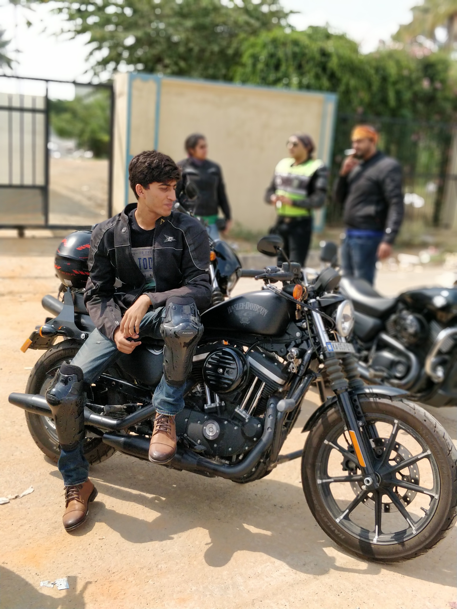
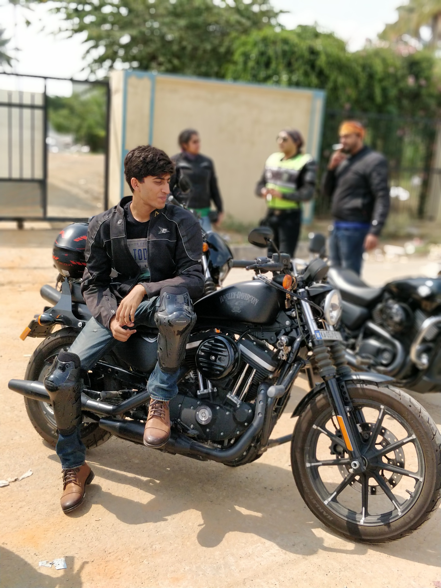

I love challenges. Be it diving at a depth of 18metres or going on a 300km motorbike ride, I can say I'm always ready. This is how I would like to be known. When I eventually start my own company or dive into entrepreneurship someday, "NKJ" might just be the brand name! Looking back on my journey so far, I've gained valuable experience in diverse IT projects, collaborating with both internal teams and external clients. I have developed a strong foundation in Cloud Migration, Digital Transformation, IT service management (ITSM), IT Consulting and Agile project management. My experience also extends to business intelligence, data analytics, ITIL based service operations (incident, change, and request management), ServiceNow, AI and ML, where I’ve successfully applied my technical skills to solve problems and drive innovation.
My goal is to leverage my technical expertise and strategic insights to bridge the gap between technology and business, driving impactful solutions that enhance business outcomes. This blend of expertise positions me well for roles that require both technical proficiency and a strong grasp of business strategy. I have a strong foundation in requirements gathering, process improvement, consulting and cross-functional team collaboration. To further enhance my knowledge, I have been diligently pursuing IT certifications. Looking ahead, I plan to expand my qualifications by obtaining advanced IT certifications that focus on both technology and management. These certifications will not only enhance my technical proficiency but also enhance my ability to manage and lead projects, positioning me for more advanced roles in the organization.
Exploration introduces you to new places and people and that's how I like to build my relationships. So be it going for hike or packing my swim shorts for a snorkel or dive, I'm up and always ready to explore and take on new challenges and opportunities. A cinephile, an ardent fan of Hollywood, love airplanes and a history enthusias
Gallery
Photos
 
